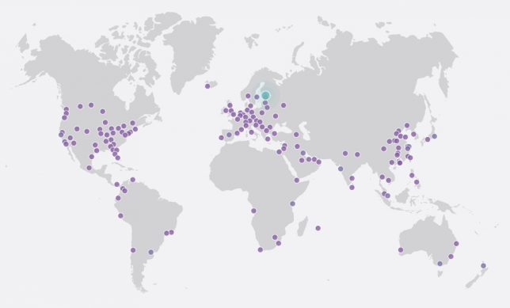
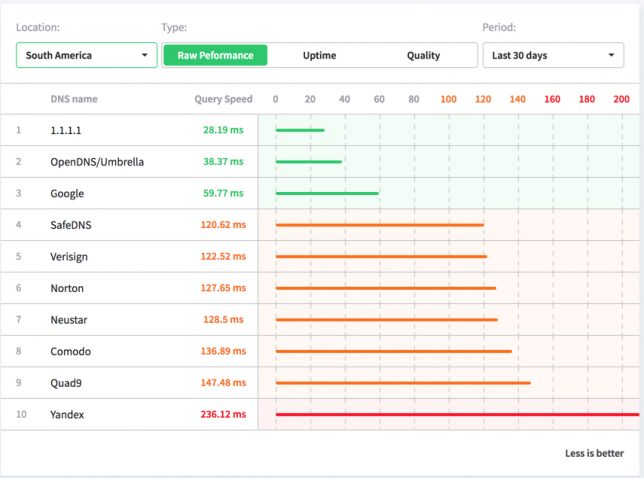

Novo serviço DNS - CloudFlare 1.1.1.1
Blog Review ToolsCompartilhe esse post nas redes sociais...
Olá Homelabers!
Qual servidor de DNS vocês costumam usar em seu ambiente?
Hoje, sim, dia 01/04, também considerado o dia da mentira, a CloudFlare lançou publicamente o seu serviço de DNS Público com um endereço IP terrivelmente fácil de se lembrar : 1.1.1.1 e 1.0.0.1
https://twitter.com/Cloudflare/status/980430875258212352
Para quem é mais antigo na área, o DNS padrão era o 4.2.2.2 da Level3. Anos depois o Google lançou o seu próprio serviço 8.8.8.8, que acabou virando o padrão. Em 2016 a IBM apresentou o 9.9.9.9 (Quad9) e agora a CloudFlare chega com o 1.1.1.1 #1dot1dot1dot1
O que é um servidor DNS e para que serve?
O DNS ou Servidor DNS (Domain Name System) é o serviço responsável por converter - ou melhor dizendo RESOLVER - um nome de domínio para o seu correspondente endereço IP. O DNS é a grande lista telefônica da internet.
https://www.youtube.com/watch?v=ACGuo26MswI
Outro link bem legal explicando como funciona um servidor de DNS
Porque usar o 1.1.1.1 ?
* O serviço é totalmente gratuito
* Privacidade - É o foco da CloudFlare para o serviço - eles prometem nunca gravar sua solicitação de DNS no disco e não manter os registros por mais de 24 horas.
* Velocidade - Baixa latência e baixo tempo de resposta - em média 14ms para endereços fora da sua rede
* Suporte a DNS over HTTPS eDNS-over-TLS, o que significa que até mesmo seu ISP não saberá qual nome de domínio você está solicitando.
* Suporte a IPv6
* Presença - A CloudFlare e consequentemente seu novo serviço está presente em 151 cidades espalhadas por 74 países, [incluindo o Brasil](https://blog.cloudflare.com/parabens-brasil-cloudflares-27th-data-center-now-live/)

Eu já uso alguns serviços da CloudFlare aqui no Homelaber, como DNS Autoritativo, WAF, Cache, CDN, etc e vou passar a utilizar o seu DNS público no meu lab e também como DNS principal da minha rede aqui de casa.
Testes
De acordo com o site dnsperf, o 1.1.1.1 é o servidor de DNS mais rápido no momento para a América do Sul

Link para o anúncio: https://blog.cloudflare.com/announcing-1111/
Link para o post explicando como o serviço foi concebido e criado: https://blog.cloudflare.com/dns-resolver-1-1-1-1/
E ai? Você vai mudar o seu DNS atual para o 1.1.1.1? Responda ai nos comentários.
Compartilhe esse post nas redes sociais...Valdecir Carvalho
Nerd e pai orgulhoso da Mariana e João. Profissional Sênior de TI com foco em arquitetura de infraestrutura e cloud computing. Blogueiro, podcaster, palestrante, amante de comunidades técnicas, fotógrafo aposentado e adora jogos antigos.
#vExpert · #VMUGLeader · #VUGBrasil · #vBronwBagBrasil · #VeeamVanguard